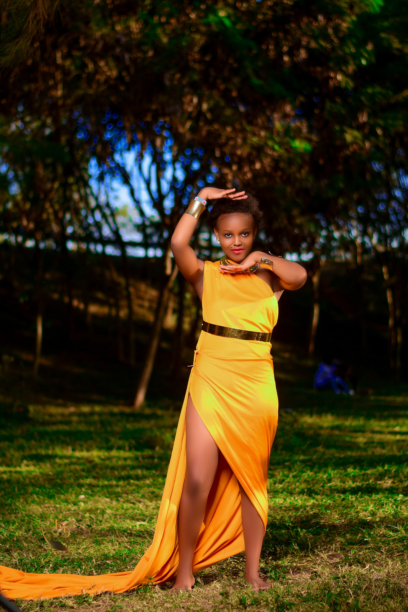
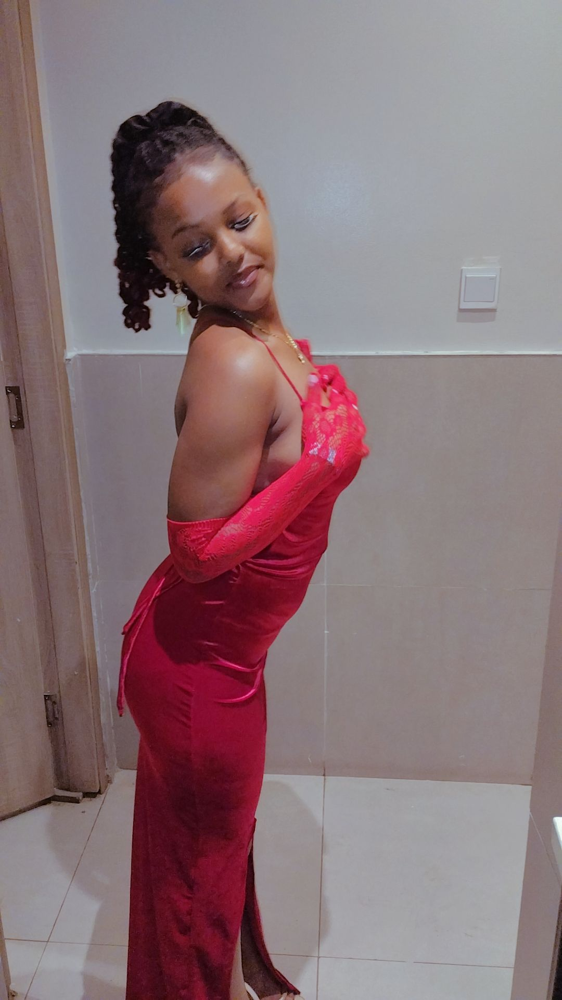

""My name is purity wacera githongo a 20years old girl who grew in an urban area later a relocated to a rural area.I was never the type of person who believed in grand beginnings. For me, life always seemed to unfold in small, almost unnoticed moments—like the quiet sound of rain tapping against a window or the way a familiar song could stir up memories I didn’t realize I had. But looking back, I realize those little moments have shaped me more than any big event ever could. This is the story of how I learned that the most important journey isn't the one you plan for, but the one that catches you by surprise and teaches you more about who you are than you ever expected."

Being a 20years old girl,i am also a college student.i started schooling as early as i was 3years old .I started my primary education in the year 2009 to 2017 where i finished my grade 8 class.I did not stop there i continued with my secondary education from the year 2018 to 2021.I later joined college in the year 2023 till date, after a short period of break."Education, for me, has always been more than just textbooks and tests—it’s been a journey of self-discovery. From the moment I stepped into my first classroom, I realized that learning wasn’t just about memorizing facts; it was about uncovering the world around me and finding my place in it. Through every challenge, every breakthrough, and every lesson, I’ve come to understand that education is not a destination, but a lifelong path that shapes the way we see ourselves and the world we live in."
I have grew up in a nuclear family,where i happen to be the fourth born.My family consist of two boys,three girls,one father and one mother
"From the moment I first opened a computer and saw the endless possibilities hidden within its circuits, I knew I was meant to be part of the world of technology. As an IT student, I’ve come to realize that this field isn’t just about coding or networks—it’s about solving problems, creating connections, and constantly adapting to an ever-changing landscape. What started as curiosity soon transformed into a passion, and every line of code I write, every project I undertake, reminds me that I’m not just studying for a career; I’m shaping my future in a world where innovation never stops."
Some memories are so vivid, they feel as if they’re etched in time—moments that seem small when they happen but grow in significance as the years pass. For me, the best memories are the ones that shaped who I am today: the laughter shared with friends on summer nights, the quiet conversations with family that always felt like home, and the unexpected experiences that turned into life lessons. It’s these moments, stitched together like a patchwork quilt, that remind me how beautiful and unpredictable life can be. And when I look back, I realize that the best memories weren’t the ones I planned—they were the ones that simply happened when I least expected them."